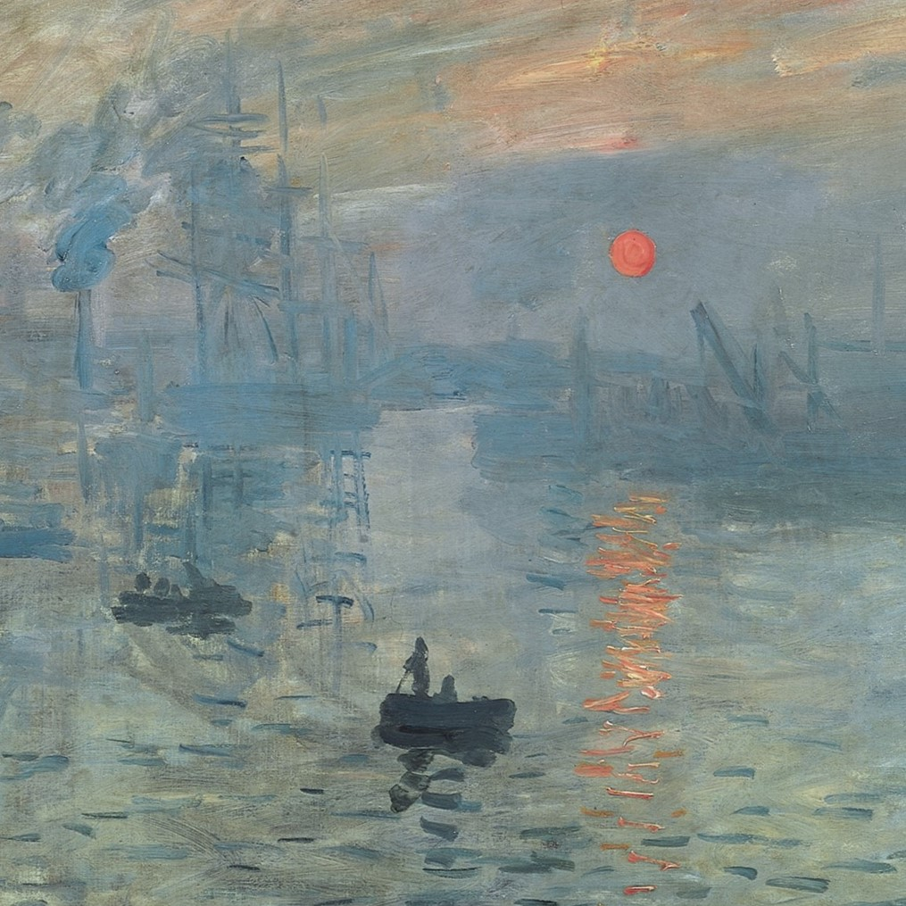

9 April 2021
Modernism painting
The first example of modernism in painting was impressionism, a school of painting that invitially focused on work done, not in studios, but outdoors (en plein air). Impressionist paintings demonstrated that human beings do not see objects, but instead see light itself. The school gathered adherents despite internal divisions among its leading practitioners and became increasingly influential.
Initially rejected from the most important commercial show of the time, the government-sponsored Paris Salon, the Impressionists organized yearly group exhibitions in commercial venues during the 1870s and 1880s, timing them to coincide with the official Salon. A significant event of 1863 was the Salon des Refusés, created by Emperor Napoleon III to display all of the paintings rejected by the Paris Salon. Where claude monet also exhibited his works in this Salon.
"I am following Nature without being able to grasp her, I perhaps owe having become a painter to flowers." ~ Claude Monet ~
At the first exhibition, in 1874, Monet displayed, among others, Impression, Sunrise, The Luncheon and Boulevard des Capucines.[43] The art critic Louis Leroy wrote a hostile review. Taking particular notice of Impression, Sunrise (1872), a hazy depiction of Le Havre port and stylistic detour, he coined the term "Impressionism". Conservative critics and the public derided the group, with the term initially being ironic and denoting the painting as unfinished. More progressive critics praised the depiction of modern life—Louis Edmond Duranty called their style a "revolution in painting". He later regretted inspiring the name, as he believed that they were a group "whose majority had nothing impressionist". The total attendance is estimated at 3500. Monet priced Impression: Sunrise at 1000 francs but failed to sell it. The exhibition was open to anyone prepared to pay 60 francs and gave artists the opportunity to show their work without the interference of a jury.
Another exhibition was held in 1876, again in opposition to the Salon. Monet displayed 18 paintings, including The Beach at Sainte-Adresse which showcased multiple Impressionist characteristics.For the third exhibition, on 5 April 1877, he selected seven paintings from the dozen he had made of Gare Saint-Lazare in the past three months, the first time he had "synced as many paintings of the same site, carefully coordinating their scenes and temporalities". The paintings were well received by critics, who especially praised the way he captured the arrival and departures of the trains. By the fourth exhibition his involvement was by means of negotiation on Caillebotte's part. His last time exhibiting with the Impressionists was in 1882—four years before the final Impressionist exhibition.
Monet, Renoir, Pissarro, Morisot, Cézanne and Sisley proceeded to experiment with new methods of depicting reality. They rejected the dark, contrasting lighting of romantic and realist paintings, in favour of the pale tones of their peers' paintings such as those by Jean-Baptiste-Camille Corot and Boudin. After developing methods for painting transient effects, Monet would go on to seek more demanding subjects, new patrons and collectors; his paintings produced in the early 1870s left a lasting impact on the movement and his peers—many of whom moved to Argenteuil as a result of admiring his depiction.
- source from Wikipedia -